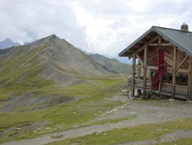

crête des Gittes (2538 m)

Départ : la Gitte (1620 m)
Aller : xx km, +989 et - 71 m, xx min
Retour : xx km, + 71 et - 989 m, xx min
Difficulté : EE
Période : juillet - septembre
Remarque : -
Bibliographie : topo Tour du Beaufortain
Traverser le ruisseau de la Gitte (passerelle) pour monter à la Sausse. Le sentier a été taillé dans les gorges (1900 - 1950 m ; passage magnifique). Devant les chalets de la Sausse, prendre à G pour monter au col du Bonhomme (2329 m) où on retrouve le TMB et l’itinéraire AsF© 16.2 (lire page 101).Au refuge, prendre le GR5 qui descend au col et remonte à la crête des Gittes (danger par temps humide).
Descendre au col de la Sauce et descendre N dans la combe. Un chemin descend le replat à 2200 m en rive G, puis descend en zigzag, traverse rive D vers 2040 et rejoint les cabanes de la Sausse et le sentier de montée.
Photo : la crête de la Gitte, depuis le refuge de la croix du Bonhomme.